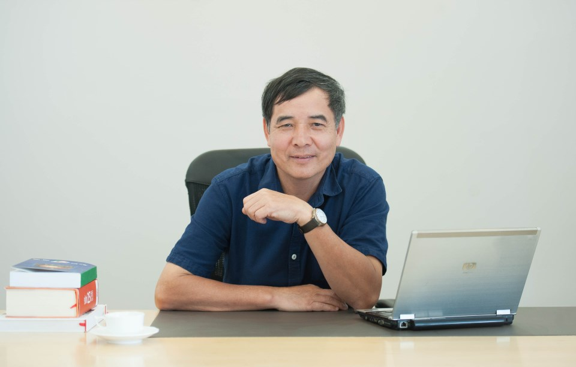
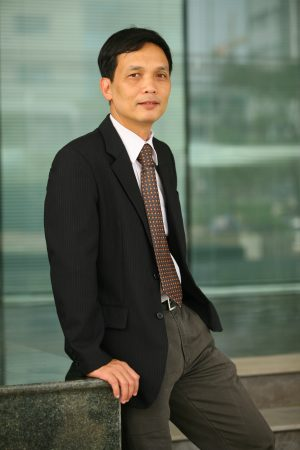
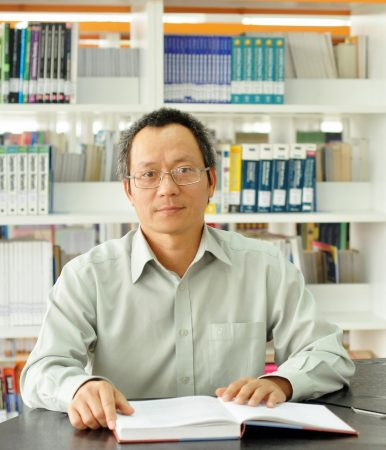
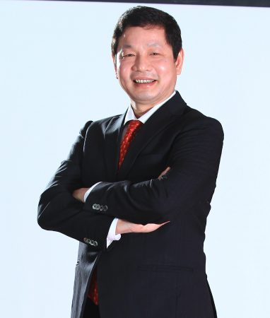
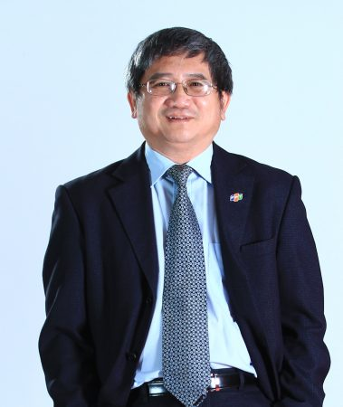

Trang chủ
>>
Ban lãnh đạo
BAN LÃNH ĐẠO
Ban lãnh đạo trường là cơ quan quản lý
cao nhất, chịu trách nhiệm về các hoạt động của
Trường. Ban lãnh đạo trường có trách nhiệm ra các
quyết định chiến lược, định hướng hoạt động, cũng
như điều hành các hoạt động của Trường.
Ông Lê Trường Tùng – Chủ tịch HĐQT
Tiến sỹ Lê Trường Tùng tốt nghiệp đại học tại khoa Toán, Đại học Tổng hợp quốc gia
Mat-xcơ-va Lô-mô-nô-xốp (MGU), bảo vệ Luận án Tiến sỹ tại Học viện kỹ thuật quân sự. Là Nghiên cứu
viên chính, được nhận quân hàm Thượng tá tháng 9/1999.
Ông còn là Chủ tịch HĐQT và Hiệu trưởng Trường Đại học FPT, nguyên Chủ tịch Hội Tin học thành phố Hồ Chí Minh (HCA), Đại biểu HĐND thành phố Hồ Chí Minh khóa VII (2004-2011), Phó Chủ tịch Hội tin học Việt Nam (VAIP), Phó Chủ tịch Hiệp hội các trường Đại học Cao đẳng Ngoài công lập.
Ông còn là Chủ tịch HĐQT và Hiệu trưởng Trường Đại học FPT, nguyên Chủ tịch Hội Tin học thành phố Hồ Chí Minh (HCA), Đại biểu HĐND thành phố Hồ Chí Minh khóa VII (2004-2011), Phó Chủ tịch Hội tin học Việt Nam (VAIP), Phó Chủ tịch Hiệp hội các trường Đại học Cao đẳng Ngoài công lập.
Ông Nguyễn Thành Nam - Phó chủ tịch thường trực HĐQT
Tiến sỹ Nguyễn Thành Nam là cựu học sinh Khối chuyên Toán, Trường THPT chuyên Khoa
học Tự nhiên, Đại học Quốc gia Hà Nội khóa 11 (1976-1979). Năm 1988, ông bảo vệ luận án Phó Tiến sỹ
Toán tại trường Đại học Tổng hợp quốc gia Mat-xcơ-va Lô-mô-nô-xốp (MGU), Nga.
Năm 1988 ông về nước và cùng với 12 người khác, đứng đầu là ông Trương Gia Bình, sáng lập ra FPT. Từ năm 2009 đến 2011, ông giữ chức Tổng giám đốc Tập đoàn FPT. Hiện nay ông đang đương nhiệm chức Phó chủ tịch HĐQT Trường Đại học FPT.
Năm 1988 ông về nước và cùng với 12 người khác, đứng đầu là ông Trương Gia Bình, sáng lập ra FPT. Từ năm 2009 đến 2011, ông giữ chức Tổng giám đốc Tập đoàn FPT. Hiện nay ông đang đương nhiệm chức Phó chủ tịch HĐQT Trường Đại học FPT.
Ông Nguyễn Khắc Thành – Phó chủ tịch HĐQT
Tiến sỹ Nguyễn Khắc Thành tốt nghiệp Đại học Tổng hợp quốc gia Mat-xcơ-va
Lô-mô-nô-xốp (MGU) - Nga năm 1987 và năm 1991 ông bảo vệ thành công luận án Phó Tiến sỹ tại MGU.
Năm 1991 trở về nước công tác và gia nhập vào đội phần mềm FPT, ông nhanh chóng trở thành một trong những nhân sự chủ chốt của Tập đoàn FPT. Ông được bổ nhiệm làm Giám đốc Trung tâm lập trình viên quốc tế FPT Aptech vào năm 1998, là một trong những nhân sự đóng góp đáng kể cho công cuộc đào tạo lực lượng đông đảo lập trình viên chất lượng cho ngành CNTT Việt Nam thời điểm bấy giờ.
Hiện tại, ông đang giữ chức vụ Phó Tổng Giám đốc FPT, Phụ trách Nguồn lực toàn cầu hoá, đồng thời là Hiệu trưởng Trường ĐH FPT và Uỷ viên HĐQT Trường Đại học FPT.
Năm 1991 trở về nước công tác và gia nhập vào đội phần mềm FPT, ông nhanh chóng trở thành một trong những nhân sự chủ chốt của Tập đoàn FPT. Ông được bổ nhiệm làm Giám đốc Trung tâm lập trình viên quốc tế FPT Aptech vào năm 1998, là một trong những nhân sự đóng góp đáng kể cho công cuộc đào tạo lực lượng đông đảo lập trình viên chất lượng cho ngành CNTT Việt Nam thời điểm bấy giờ.
Hiện tại, ông đang giữ chức vụ Phó Tổng Giám đốc FPT, Phụ trách Nguồn lực toàn cầu hoá, đồng thời là Hiệu trưởng Trường ĐH FPT và Uỷ viên HĐQT Trường Đại học FPT.
Ông Trương Gia Bình – Uỷ viên HĐQT
Phó Giáo sư - Tiến sỹ Trương Gia Bình chính là người sáng lập của Tập đoàn FPT.
Thời phổ thông, ông là học sinh chuyên Toán Trường Chu Văn An Hà Nội.
Ông tốt nghiệp khoa Toán cơ, Đại học quốc gia Mat-xcơ-va Lô-mô-nô-xốp (MGU) năm 1979. Năm 1983 ông bảo vệ thành công luận án Phó tiến sỹ tại MGU. Năm 1991 ông được Nhà nước phong tặng danh hiệu Phó Giáo sư.
Hiện ông đang giữ chức vụ Chủ tịch HĐQT của Tập đoàn FPT.
Ông tốt nghiệp khoa Toán cơ, Đại học quốc gia Mat-xcơ-va Lô-mô-nô-xốp (MGU) năm 1979. Năm 1983 ông bảo vệ thành công luận án Phó tiến sỹ tại MGU. Năm 1991 ông được Nhà nước phong tặng danh hiệu Phó Giáo sư.
Hiện ông đang giữ chức vụ Chủ tịch HĐQT của Tập đoàn FPT.
Ông Bùi Quang Ngọc – Uỷ viên HĐQT
Tiến sỹ Bùi Quang Ngọc từng là giảng viên khoa Toán - Tin học Trường Đại học Bách
khoa Hà Nội. Ông tốt nghiệp Khoa Toán, Đại học Tổng hợp Kishinhov (Cộng hoà Moldova) năm 1979 và bảo
vệ luận án Tiến sỹ về Cơ sở dữ liệu tại Đại học Grenoble (Pháp) năm 1986.
Ông là một trong 13 thành viên sáng lập của Tập đoàn FPT và là lãnh đạo đầu tiên phụ trách mảng CNTT của FPT. Ông là người có tầm ảnh hưởng trong ngành CNTT với danh hiệu Top 10 lãnh đạo Công nghệ thông tin (CIO) xuất sắc nhất Đông Dương năm 2005.
Hiện nay ông đang giữ chức vụ Tổng giám đốc của Tập đoàn FPT.
Ông là một trong 13 thành viên sáng lập của Tập đoàn FPT và là lãnh đạo đầu tiên phụ trách mảng CNTT của FPT. Ông là người có tầm ảnh hưởng trong ngành CNTT với danh hiệu Top 10 lãnh đạo Công nghệ thông tin (CIO) xuất sắc nhất Đông Dương năm 2005.
Hiện nay ông đang giữ chức vụ Tổng giám đốc của Tập đoàn FPT.
Cô Nguyễn Thị Tân – Hiệu trưởng
Năm 1982 cô tốt nghiệp Đại học Sư phạm ngành Tiếng Anh. Cho đến nay cô Nguyễn Thị
Tân đã có nhiều năm kinh nghiệm giảng dạy ở các trường trung học phổ thông tại Thành phố Hải Phòng.
Năm 2010, cô giữ vị trí Tổ trưởng Tổ chuyên môn của Trường THPT Ngô Quyền – Hải Phòng. Từ năm 1998 đến 2013, cô tham gia công tác thanh tra chuyên môn của Sở Giáo dục & Đào tạo Hải Phòng. Năm 2004 đến đầu năm 2013 cô giữ chức vụ Hiệu phó phụ trách chuyên môn trường THPT Tân An Hải Phòng. Hiện nay cô đang giữ chức vụ Hiệu trưởng Trường THPT FPT.
Năm 2010, cô giữ vị trí Tổ trưởng Tổ chuyên môn của Trường THPT Ngô Quyền – Hải Phòng. Từ năm 1998 đến 2013, cô tham gia công tác thanh tra chuyên môn của Sở Giáo dục & Đào tạo Hải Phòng. Năm 2004 đến đầu năm 2013 cô giữ chức vụ Hiệu phó phụ trách chuyên môn trường THPT Tân An Hải Phòng. Hiện nay cô đang giữ chức vụ Hiệu trưởng Trường THPT FPT.